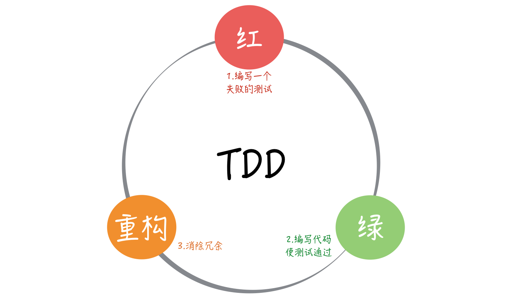

- 00 开篇词 为什么写测试是程序员的本职工作？.md.html
- 01 实战：实现一个 ToDo 的应用（上）.md.html
- 02 实战：实现一个 ToDo 的应用（下）.md.html
- 03 程序员的测试与测试人员的测试有什么不同？.md.html
- 04 自动化测试：为什么程序员做测试其实是有优势的？.md.html
- 05 一个好的自动化测试长什么样？.md.html
- 06 测试不好做，为什么会和设计有关系？.md.html
- 07 Mock 框架：怎么让测试变得可控？.md.html
- 08 单元测试应该怎么写？.md.html
- 09 测试覆盖率：如何找出没有测试到的代码？.md.html
- 10 为什么 100% 的测试覆盖率是可以做到的？.md.html
- 11 集成测试：单元测试可以解决所有问题吗？.md.html
- 12 实战：将 ToDo 应用扩展为一个 REST 服务.md.html
- 13 在 Spring 项目中如何进行单元测试？.md.html
- 14 在 Spring 项目如何进行集成测试？.md.html
- 15 测试应该怎么配比？.md.html
- 16 怎么在遗留系统上写测试？.md.html
- 17 TDD 就是先写测试后写代码吗？.md.html
- 18 BDD 是什么东西？.md.html
- 答疑解惑 那些东西怎么测？.md.html
- 结束语 对代码的信心要从测试里来.md.html
- 捐赠
17 TDD 就是先写测试后写代码吗？
你好，我是郑晔！
到这里，我已经给你介绍了在真实项目中做好测试需要的基础知识。写测试远远不是用 xUnit 框架写代码就能做好的一件事，只有在工作方式、软件设计、编写代码、测试理念等方方面面都做好，我们才能做好测试。不过随之而来的是，我们有了一个强大的测试基础，这可以让我们放心大胆地不断向前，因为我们已经进入到编写高质量代码的正向循环之中。越写测试越安心，越安心也就越有时间编写高质量的代码。
有了这些基础，应对日常工作已经绰绰有余。不过在行业里总有人在探索着更好的做法，所以在最后的扩展篇，我将给你介绍 TDD 和 BDD 两项实践。在你学有余力的情况下，可以挑战一下，让自己再向前走一步。这一讲，我们先来说说 TDD，也就是测试驱动开发（Test Drvien Development）。
TDD 的节奏
或许你已经迫不及待地要举手了：“TDD 我知道，就是先写测试，后写代码。”但真的是这样吗？严格地说，“先写测试、后写代码”的做法叫测试先行开发（Test First Development），而不是测试驱动开发。
测试驱动开发不也是先写测试后写代码吗？二者之间有什么区别呢？
要回答这个问题，我们需要知道 TDD 的一个关键要素，TDD 的节奏：红-绿-重构。

红表示写了一个新的测试，测试还没有通过的状态；绿表示写了功能代码，测试通过的状态；而重构就是在完成基本功能之后，调整代码的过程。
这里说到的红和绿源自单元测试框架。因为在很多单元测试框架运行测试的过程中，测试不过时会用红色展示测试结果，而通过时则采用绿色进行展示，这已经成了单元测试框架约定俗成的规则。
在前面内容中我们说过，让单元测试框架流行起来的是 JUnit，其作者之一是 Kent Beck。TDD 走进大众视野则依赖于极限编程这个软件工程方法论的兴起，而极限编程的创始人也是 Kent Beck。Kent Beck 在 JUnit 和 TDD 两件事都有着重大贡献，也就不难理解为什么 TDD 的节奏叫“红-绿-重构”了。
先写测试，然后写代码完成功能，在第一步和第二步上，测试先行开发和测试驱动开发是一样的。二者的差别在于，测试驱动开发并没有就此打住，它还有一个更重要的环节：重构（refactoring）。
也就是说，在功能完成而且测试跑通之后，我们还会再次回到代码上，处理一下代码中写得不理想的地方，或是消除新增代码与旧有代码之间的重复。你或许会问，那为啥不在第二步“绿”的时候就把代码写好呢？因为“绿”的关注点只是让测试通过，把功能完成。
所以我们说，测试先行开发和测试驱动开发的差异就在重构上。
很多人只记住了“先写测试，后写代码”，因为在很多人的印象中，写代码唯一重要的事就是完成功能。通过了测试，就是完成了功能，也就意味着万事大吉了。然而，这种想问题的方式会让人忽略新增代码可能带来的坏味道（Code Smell），坏味道会让代码逐渐腐坏，这是一个工程问题，也就是会有长期影响的问题。
人的注意力是有限的，让人在一个阶段把所有事情都做好，很难。事实上我们会看到，很多团队代码变乱的一个重要原因就是把全部的注意力都放到完成功能上，根本无暇顾及代码本身的质量。从这个角度上看，TDD 是更符合人性的做法，它把完成功能和代码调整当成了两个阶段。
重构就是一个消除代码坏味道的过程。一旦你有了测试，你就可以大胆地重构了，因为任何修改错误，测试都会替你捕获到。
在测试驱动开发中，重构与测试是相辅相成的：没有测试，修改代码只能是提心吊胆；没有重构，代码的混乱程度会逐步增加，测试也会变得越来越不好写。
现在，你已经理解了测试驱动开发不只是“先写测试，后写代码”。但这只是破除了概念上的误区，我们还需要再进一步，知道测试怎么“驱动”开发。
测试“驱动”开发
不难理解，重构和测试相互配合，这个过程就会“驱动”着我们把代码写得越来越好。不过，这只是对“驱动”一词最粗浅的理解。
首先，我来问你一个问题，测试驱动开发，从哪里开始呢？很多人会说，测试驱动开发不是从测试开始的吗？这个答案非常直观，我们可以接着追问下去，写测试要从哪里开始呢？
对很多人来说，TDD 是一种难以接受的做法，抛开理念上的差异，更重要的原因是，写测试无从下手。学习过我们这个专栏你会发现，很多时候写不出测试，主要是面对的需求太大了。所以，真正动手做开发的第一步是任务分解，把一个规模很大的需求拆分成若干小任务。面对一个具体的小任务，我们才有动手写测试的基础。测试驱动开发要从任务分解开始。
具体到了写测试的环节，即便面对的是一个小任务，对很多人来说，这依然不是一件容易完成的事。同样，我们在前面分析过，想要写出测试，需要有可测试的代码。这意味着，我们的代码需要有一个可测试的设计。如果不能写测试，我们就要调整代码，让代码变得可以测试，这是我们上一讲中谈遗留系统测试所讲的内容。
从这里你可以看出，从测试出发考虑问题的这种思考方式，会彻底颠覆掉我们原有的工作习惯，甚至是为了测试调整设计。但结果是我们得到了一个更好的设计，所以，很多懂 TDD 的人会把 TDD 解释为测试驱动设计（Test Driven Design）。
现在你可以理解了，为了写测试，首先“驱动”着我们把需求分解成一个一个的任务，然后会“驱动”着我们给出一个可测试的设计，而在具体的写代码阶段，又会“驱动”着我们不断改进写出来的代码。把这些内容结合起来看，我们真的是在用测试“驱动”着开发。
TDD 这么好，为什么行业里采用 TDD 这种工作方式的人并不多呢？首先，很多人本身对 TDD 的理解是错误的，这是我在前面分析过的；其次，TDD 看似简单的节奏中，其实需要很多前置的基础，比如任务分解、可测试的设计等等，而这些能力是很多人不具备的。换个角度看，TDD 只是冰山一角，露在海面之上的是 TDD 的节奏，而藏在海面下的是任务分解、软件设计这些需要一定时间积累的能力。
我们这个专栏介绍TDD的方式相比于传统介绍 TDD 的方式，还是挺不一样的。学过我们这个专栏之后，你其实已经具备了 TDD 的基础。因为在前面部分的介绍中，我已经把这些基础能力给你串讲过了。到了这里，你只需要知道 TDD 的节奏是怎样的，如果想尝试 TDD，那么按照 TDD 的节奏练习一段时间，你就知道 TDD 是怎么回事了。
最后，再给你补充一个知识点。前面说过 TDD 是来自极限编程，那极限编程为什么要叫极限编程呢？
极限编程之所以叫“极限”，它背后的理念就是把好的实践推向极限：
- 如果集成是好的，我们就尽早集成，推向极限就是每一次修改都集成，这就是持续集成。
- 如果程序员写测试是好的，我们就尽早测试，推向极限就是先写测试，再根据测试调整代码，这就是测试驱动开发。
- 如果代码评审是好的，我们就多做评审，推向极限就是随时随地代码评审，这就是结对编程。
- 如果客户交流是好的，我们就和客户多交流，推向极限就是客户与开发团队时时刻刻在一起，这就是现场客户。
极限编程本身的实践值得我们好好学习，但极限编程背后这种理念其实也非常值得我们学习。我们在日常工作中也不妨多想想，有哪些做法是好的，如果把它推向极致会是什么样子。这种想问题的方式会在很大程度上拓宽你的思路。
总结时刻
今天我们讲了 TDD，也就是测试驱动开发。我们在专栏前面的内容中学习的是在代码层面上如何写测试，而 TDD 这种实践探索的是在开发过程中如何写测试。
测试驱动开发已经是行业中的优秀实践，学习测试驱动开发的第一步是记住测试驱动开发的节奏：红——绿——重构。
知道了 TDD 的节奏之后，我们还需要理解测试怎样驱动开发。在 TDD 的过程中，我们要先进行任务分解，把大需求拆成小任务，然后考虑代码的可测试性，编写出整洁的代码，这一切都是在“测试”驱动下产生的。
正是因为视角的转变，为了编写可测的代码，我们甚至要为此调整设计，所以，有人也把 TDD 称为测试驱动设计。
无论你是否采用 TDD 的实践，在动手写代码之前，从测试的角度进行思考都是非常有价值的一件事，这也是编写高质量代码的重要一环。
如果今天的内容你只能记住一件事，那请记住：从测试的视角出发看待代码。
思考题
你尝试过 TDD 吗？如果没有，不妨试试，然后在留言区分享一下你采用 TDD 进行开发的感受。
© 2019 - 2023 Liangliang Lee. Powered by gin and hexo-theme-book.